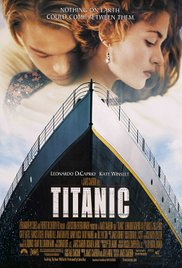

My favorite movies
|  |
 |
 |
A seventeen-year-old aristocrat falls in love with a kind but poor artist aboard the luxurious, ill-fated R.M.S. Titanic.
Director: James Cameron
Writer: James Cameron
Stars: Leonardo DiCaprio, Kate Winslet, Billy Zane | See full cast & crew
|
A paraplegic marine dispatched to the moon Pandora on a unique mission becomes torn between following his orders and protecting the world he feels is his home.
Director: James Cameron
Writer: James Cameron
Stars: Sam Worthington, Zoe Saldana, Sigourney Weaver | See full cast & crew
|
After he becomes a quadriplegic from a paragliding accident, an aristocrat hires a young man from the projects to be his caregiver.
Directors: Olivier Nakache, Eric Toledano
Writers: Olivier Nakache, Eric Toledano
Stars: François Cluzet, Omar Sy, Anne Le Ny | See full cast & crew
|
GO HOME